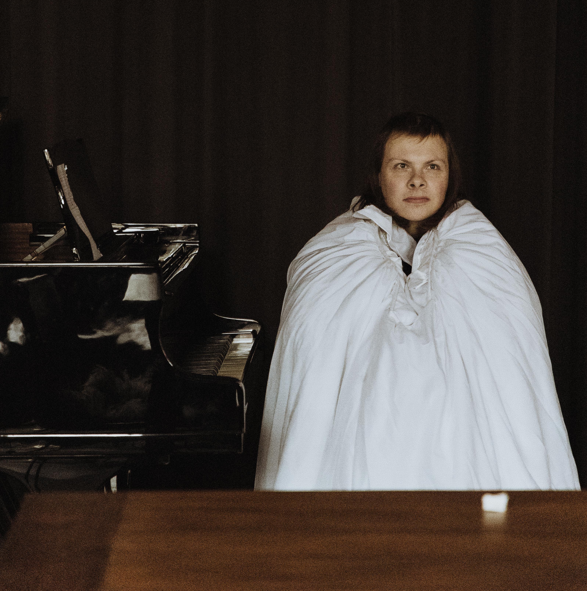

KASKO was quite likely my strangest, yet most enjoyable artistic experiences.
In a single week, four teams comprised of some 8 music- and musical theater students
put together performances in 4 different spaces in a church, with the consent of the
building's owners. We lived together in a little vacation home we all rented together
and worked from the early morning until evening. In the end, we created some fabulous
performances which unfortunately were fotographed more than they were filmed.

My first performance of the evening, and the first performance in general, took place in a
small, musty room, which we quickly decided to treat as a sort of 'bar'-set. This combined
with the musical genre we had generated- a combination of dubstep, a french chanson and references
to vampirism. I've included two clips, seen below.
If you're looking for me (as well you should,) I'm the pile of laundry behind the piano. There's
two more pictures of that look at the top of this section.
My second performance of the evening is also the final one I can do any justice here.
Using a metal table and two ornate wine-glasses, me and my co-creator Amber portrayed a sort
of summoning ritual, centering themes of change and reflection. Amber is a ballet dancer and
opera-singer, something she baffellingly managed to combine in this piece.
What I liked best about our performance was how understated it really ended up being. I created
watery effects on the ceiling with a phone-torch and a water bottle, as I combined the metal
table and the wine-glasses to create some odd resonances. Amber would then interrupt me, culminating
in an encounter where we approached eachother as she sang and danced, and I continued to create all
sorts of noises with the water. In the end, she took my original place by the table, looking up
at the ceiling, whilst I slipped out the back and ran to the next room for my third performance.